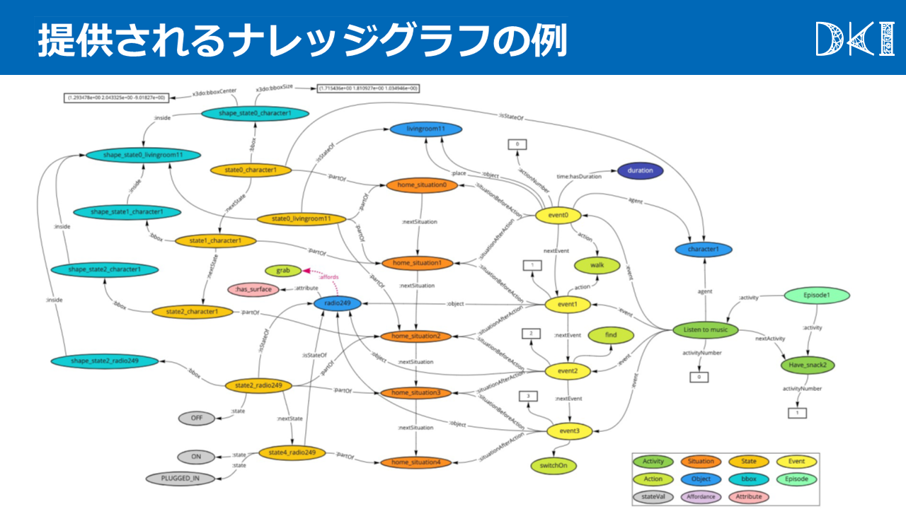
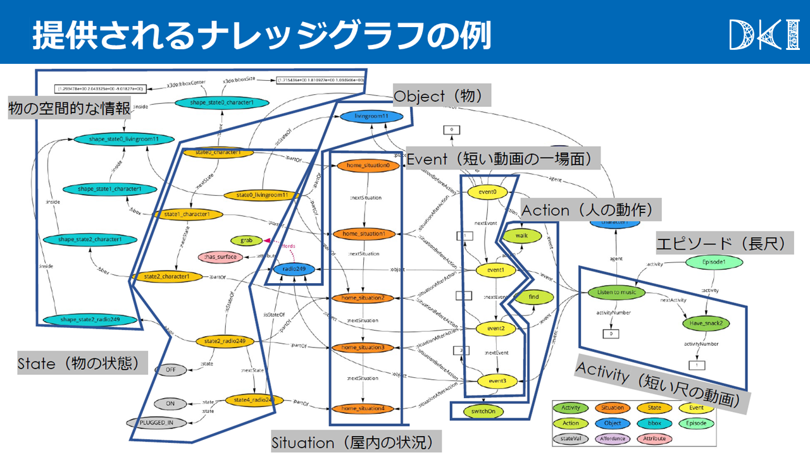

ナレッジグラフ公開
データセット公開
目次
ナレッジグラフと動画の利用方法
GitHub
ナレッジグラフはResource Description Framework (RDF)形式とし，GitHubで公開しています。対応する動画も公開しています。
https://github.com/KnowledgeGraphJapan/KGRC-RDF/tree/kgrc4si
動画: https://kgrc4si.ml/movies/ または zip形式:https://github.com/KnowledgeGraphJapan/KGRC-RDF/tags
Webブラウザに取るナレッジグラフの閲覧
ナレッジグラフをWebブラウザで閲覧できます。 https://kgrc4si.ml:7200/から利用可能ですので， 詳しくは GraphDB のマニュアルをご参照ください。
SPARQLエンドポイント
ナレッジグラフに対してSPARQLクエリで検索できるエンドポイントを提供しています。
サーバに負荷がかかる大量の問い合わせはご遠慮ください。
APIとして使う
パラメータ：query={SPARQLクエリのURLエンコード}, format={データフォーマット(json, xml, csv, ...)}
Google Colaboratoryで Python(rdflib)を用いた例
上記のSPARQLエンドポイントを Google Colab でプログラム(Python)から利用する例です。手持ちの Jupyter notebook でも同様です。
ナレッジグラフの構造
推論チャレンジで提供するナレッジグラフは、「イベント」とそれに対応する「行動（action）」「対象物（mainObject, targetObject）」「主体（agent）」「場面間の関係（nextEvent)」「時刻」などで表現されています。 詳しくは下記スライドをご覧ください。

- 
- 
サンプルSPARQLクエリ
｢インターネットをブラウズする」というアクティビティ中のイベントを取得する
PREFIX ex: <http://kgrc4si.ml/virtualhome2kg/instance/>
PREFIX vh2kg: <http://kgrc4si.ml/virtualhome2kg/ontology/>
select DISTINCT * where {
ex:browse_internet_scene1 vh2kg:hasEvent ?event .
?event vh2kg:action ?action .
}
アクティビティの一覧を取得する
PREFIX ex: <http://kgrc4si.ml/virtualhome2kg/instance/>
PREFIX vh2kg: <http://kgrc4si.ml/virtualhome2kg/ontology/>
select DISTINCT * where {
?activity vh2kg:virtualHome ex:scene1 .
}